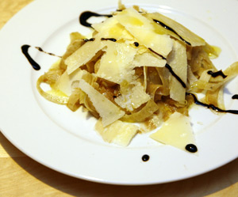

Fenchelsalat mit Parmesan
5,5 von 6fenchel ganz fein raffeln. olivenöl und balsamico dazugeben. ein wenig einziehen lassen und mit feinen parmesan scheiben garnieren.

fenchel ganz fein raffeln. olivenöl und balsamico dazugeben. ein wenig einziehen lassen und mit feinen parmesan scheiben garnieren.

Montagsplausch Nr. 217. Der Abend hiess «Revanche bei Nils».